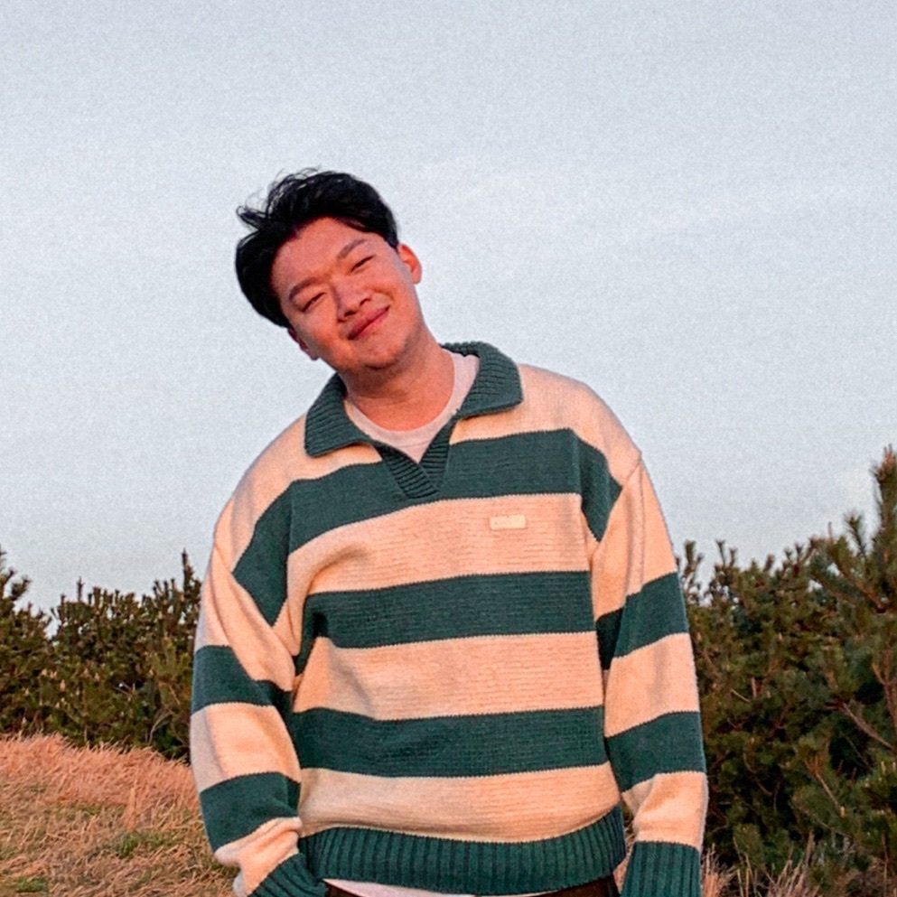

안녕하세요. 저는 한국에서 AI Creative Director로 일하고 있는 박종원입니다.
저는 온/오프라인 콘텐츠에 관련된 AI에 관심이 많고, AI를 통해 실제 같은 이미지와 영상을 구현하는 연구를 진행하고 있습니다.
디즈니를 덕질하며 SNS에 다이노필름 배포 활동을 하다가, 디즈니 자회사인 히스토리 채널에 채용제안을 받고 상경했어요
세종여권케이스를 디자인하여 펀딩을 진행했고, 누적 펀딩액 5억원을 달성했어요.
여권케이스 펀딩으로 번 돈을 핀뱃지 컬렉션 제작에 올인했고, 김연아, 김연경, 손흥민, 저스틴민 등의 셀럽들에게 전달됐어요.
육군 그래픽디자이너병에 합격하여, 육군3사관학교에서 3사TV 영상 제작자로 복무했어요.
성수 요식업 CCO로 합류하여, 카페, 음식점과 관련하여 브랜드 기획, 콘텐츠/인플루언서 마케팅, VMD를 담당했어요.
노션 글로벌 앰버서더로 선정되어, 노션 서울 커뮤니티를 만들고, 노션코리아와 협업하여 굿즈를 제작했어요.
스레드 론칭부터 활동하며 구독자 4.3만명을 달성하고, 메타코리아 행사에 초대받은 스레드 1세대 크리에이터예요.
귀멸의 칼날 AI 영상을 통해 누적 조회수 1,500만회를 달성하고, 카카오 AI 앰버서더로 활동했어요.
(주)스모어톡에서 AI 크리에이티브 디렉터로 일하며, 실제같은 AI 이미지/영상 연구를 총괄하고 있어요.
Contactwhddnjs761@gmail.com